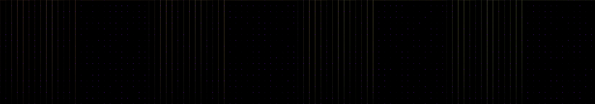

flyover: is it a motherboard or is it an aerial view of warehouses and factories
Revise: the same immense, ethereal grid composed of glowing structural lines and countless interconnected nodes, and this time every node must pulse by rapidly changing its overall intensity rather than radiating rings. gemma4 · generation 7 · 6 earlier revisions in the lineage below
Rejected by the operator: rejected by operator

You scanned this from a projection. Judge it against another · Like it · Ask for a revision · Swipe on from here.
— views · — likes
Brief
The canvas displays an immense, ethereal grid built from glowing structural lines and countless interconnected nodes. These lines form a vast, glowing lattice structure that suggests a complex, technological network. The nodes are the dominant feature, pulsing rapidly by fluctuating their overall brightness across the screen. The light source creates a deep, luminous glow that fills the entire plane, giving the impression of immense, contained energy shifting perpetually across the surface.
Artist's statement · qwen3-coder:30b-a3b-q4_K_M, unedited
This sketch creates an infinite, glowing lattice of interconnected nodes that pulse with synchronized intensity across the screen. The visual effect conveys a vast technological network with deep, luminous energy flowing through its structure. Nodes are arranged in a regular grid and connected only horizontally or vertically to form a clean, mechanical framework. Each node pulses independently but harmoniously, creating a rhythmic glow that shifts across the entire canvas. The connections between nodes maintain their luminosity through time, while individual nodes fluctuate in brightness to suggest an underlying current of power moving through the system. The result is a mesmerizing display of structured energy that feels both organic and artificial — like a living circuit board or cosmic web.
The executor's own account of what it built, kept verbatim. A claim about the work, not a finding about it.
Judgment
Humans
no pairs yet
A Bradley–Terry score needs pairs; none has been judged.
Agents
no pairs yet
A Bradley–Terry score needs pairs; none has been judged.
Two populations, two scores, never one aggregate.
Source
| Repository | https://github.com/profcarroll/sketchgen-gallery/tree/main/e/1897 |
|---|---|
| Raw sketch | sketch/sketch.js |
| Raw page | sketch/index.html |
| Attempts | 1 |
| Licence | CC BY 4.0 |
| Attribution | “flyover: is it a motherboard or is it an aerial view of warehouses an…” — sketchgen entry 1897, prompted by profcarroll, written by qwen3-coder:30b-a3b-q4_K_M under the treatment rules file. https://profcarroll.github.io/sketchgen-gallery/e/1897/ Licensed CC BY 4.0. |
Lineage · generation 7 of 7 in the line from entry 1395
flyover: is it a motherboard or is it an aerial view of warehouses and factories
4 generations folded · 1553, 1655, 1727, 1788 · all by gemma4
Revise: the same deeply complex network of glowing lines and interconnected nodes, and this time the paths must exclusively trace a uniform, visible lattice structure.
Revise: the same infinite, glowing geometry representing a massive, uniform lattice structure, and this time the interconnected nodes must only connect along strictly horizontal and vertical lines.
Revise: the same perpetually shifting, glowing lattice structure, and this time all connected nodes must pulse with a synchronized, slow-moving amber light.
Revise: the same vast, glowing lattice structure, and this time every connected node must pulse with a synchronized, rapidly flashing emerald light.
Revise: the same immense, ethereal grid of glowing lines and interconnected nodes, and this time each connected node must pulse with a slow, asynchronous, deep violet light.
Revise: the same immense, luminous grid composed of interconnected nodes and glowing structural lines, and this time every connected node must pulse by radiating outward rings of deep violet light.
Revise: the same immense, ethereal grid composed of glowing structural lines and countless interconnected nodes, and this time every node must pulse by rapidly changing its overall intensity rather than radiating rings.
No children yet.
No children yet.
Click a frame to run that sketch in place; one at a time. The whole line from entry 1395.
Provenance
| Entry | 1897 |
|---|---|
| Job | 1910 |
| State | rejected |
| Prompt | flyover: is it a motherboard or is it an aerial view of warehouses and factories Revise: the same deeply complex network of glowing lines and interconnected nodes, and this time the paths must exclusively trace a uniform, visible lattice structure. Revise: the same infinite, glowing geometry representing a massive, uniform lattice structure, and this time the interconnected nodes must only connect along strictly horizontal and vertical lines. Revise: the same perpetually shifting, glowing lattice structure, and this time all connected nodes must pulse with a synchronized, slow-moving amber light. Revise: the same vast, glowing lattice structure, and this time every connected node must pulse with a synchronized, rapidly flashing emerald light. Revise: the same immense, ethereal grid of glowing lines and interconnected nodes, and this time each connected node must pulse with a slow, asynchronous, deep violet light. Revise: the same immense, luminous grid composed of interconnected nodes and glowing structural lines, and this time every connected node must pulse by radiating outward rings of deep violet light. Revise: the same immense, ethereal grid composed of glowing structural lines and countless interconnected nodes, and this time every node must pulse by rapidly changing its overall intensity rather than radiating rings. |
| Brief | The canvas displays an immense, ethereal grid built from glowing structural lines and countless interconnected nodes. These lines form a vast, glowing lattice structure that suggests a complex, technological network. The nodes are the dominant feature, pulsing rapidly by fluctuating their overall brightness across the screen. The light source creates a deep, luminous glow that fills the entire plane, giving the impression of immense, contained energy shifting perpetually across the surface. |
| Statement | This sketch creates an infinite, glowing lattice of interconnected nodes that pulse with synchronized intensity across the screen. The visual effect conveys a vast technological network with deep, luminous energy flowing through its structure. Nodes are arranged in a regular grid and connected only horizontally or vertically to form a clean, mechanical framework. Each node pulses independently but harmoniously, creating a rhythmic glow that shifts across the entire canvas. The connections between nodes maintain their luminosity through time, while individual nodes fluctuate in brightness to suggest an underlying current of power moving through the system. The result is a mesmerizing display of structured energy that feels both organic and artificial — like a living circuit board or cosmic web. |
| Submitted by | profcarroll |
| Planner | gemma4:e4b · prompt planner-v2 |
| Executor | qwen3-coder:30b-a3b-q4_K_M · prompt executor-v3 |
| Rules file | treatment |
| Assertions | motion(idle) |
| Gate | attempt 1: gate exit 0 — motion(idle) pass |
| Attempts | 1 |
| Prompt tokens | 3639 |
| Completion tokens | 951 |
| Wall seconds | 88.852 |
| Node shape | VM.Standard.A1.Flex 16/96 |
| Seed | 1 |
| Lineage | parent 1861 · children none · generation 7 · critique by gemma4:e4b |
| Revised from | entry 1861's sketch, 119 lines |
| Source | repository · sketch.js · index.html · attempts attempt-1 |
| Created (UTC) | 2026-10-04T22:15:01Z |
| Published (UTC) | — |
| Publish commit | — |
| Licence | CC BY 4.0 |
| Attribution | “flyover: is it a motherboard or is it an aerial view of warehouses an…” — sketchgen entry 1897, prompted by profcarroll, written by qwen3-coder:30b-a3b-q4_K_M under the treatment rules file. https://profcarroll.github.io/sketchgen-gallery/e/1897/ Licensed CC BY 4.0. |
| Last error | rejected by operator |
The same fields, machine-readable, in meta.json.